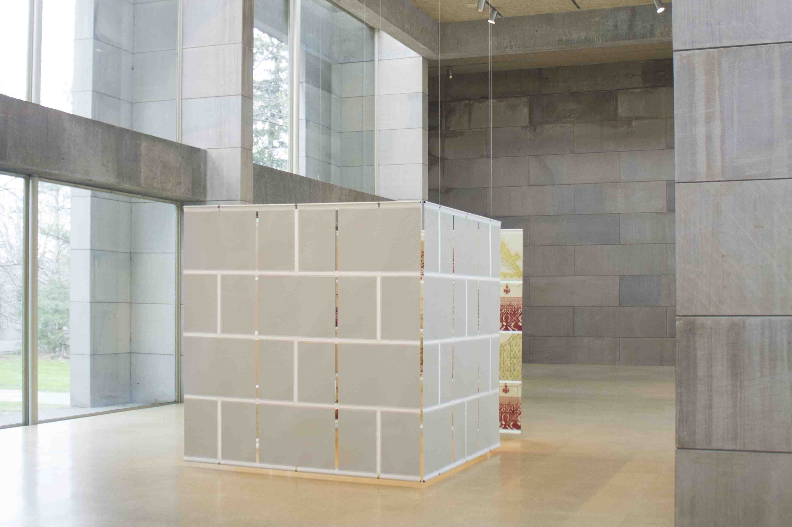

The background here is sky blue.
Within this section, the background is pink
and the border is navy.
This photo is of my thesis:

I went to Wesleyan. For more information about Wes, visit
Wesleyan's website